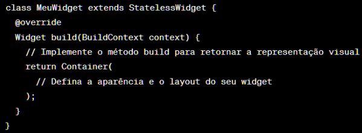
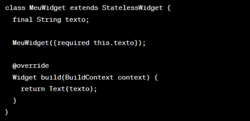
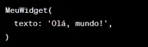
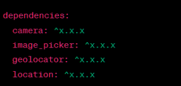
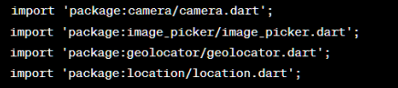

Flutter oferece suporte a animações poderosas e flexíveis para criar interfaces de usuário fluidas e interativas. Existem várias maneiras de realizar animações em Flutter, desde animações básicas até animações complexas e personalizadas.
Segue as formas mais comuns para criar animações em Flutter:
Flutter oferece uma variedade de widgets de animação embutidos que podem ser usados para animar propriedades de outros widgets. Alguns exemplos desses widgets são AnimatedContainer, AnimatedOpacity, AnimatedPositioned, AnimatedBuilder, entre outros. Esses widgets permitem animar propriedades como tamanho, opacidade, posição e muito mais. Eles são fáceis de usar e não requerem muito código adicional.
Flutter também fornece widgets de transição que permitem animar a transição entre dois estados de interface do usuário. O mais conhecido é o AnimatedSwitcher, que permite animar a troca suave de um widget para outro. Outros widgets de transição incluem Hero (para animações entre duas rotas) e SlideTransition (para animações de deslize).
A classe Animation é um conceito fundamental em Flutter para criar animações personalizadas. Ela define a propriedade que será animada e o intervalo de tempo da animação. A classe AnimationController é frequentemente usada em conjunto com Animation para controlar a animação. Você pode aplicar animações interpoladas, adicionar curvas de interpolação personalizadas e ouvir eventos durante a animação usando AnimationController e Animation.
A classe CurvedAnimation é usada para aplicar curvas de interpolação a uma animação. Ela permite que você especifique uma curva de animação personalizada, como uma curva elástica, uma curva de amortecimento ou qualquer outra curva desejada. Isso pode ajudar a dar uma sensação mais natural e suave às animações.
Se você estiver usando o padrão de gerenciamento de estado Provider, você pode combinar Animation e ChangeNotifier para criar animações reativas. O ChangeNotifier pode emitir notificações de mudança de estado e atualizar as animações correspondentes. Isso permite criar animações que respondem a alterações dinâmicas de estado em seu aplicativo.
Além dessas opções, existem bibliotecas de animação de terceiros disponíveis, como o flare_flutter para animações vetoriais e o Rive (anteriormente conhecido como Flare) para animações interativas. Essas bibliotecas oferecem recursos avançados e ferramentas para criar animações complexas e personalizadas.
Independentemente da abordagem escolhida, é importante lembrar de otimizar as animações em Flutter para garantir um desempenho suave. Isso inclui o uso adequado de setState, AnimatedBuilder, Tweens e evitar atualizações desnecessárias de widgets durante as animações.
Explorar a documentação oficial do Flutter e procurar exemplos e tutoriais em animações em Flutter pode ser útil para obter mais informações e inspiração para suas animações
A criação de widgets personalizados em Flutter é uma das principais características da estrutura de desenvolvimento de aplicativos. Permite que você crie componentes reutilizáveis e personalizados para construir interfaces de usuário complexas.
Exemplificando:
1. Crie uma nova classe que herde de StatelessWidget ou StatefulWidget. A escolha entre essas duas classes depende se o seu widget precisará gerenciar um estado interno mutável.
2. Dentro do método build, retorne um widget que representa a aparência e o layout do seu widget personalizado. Pode ser um widget de layout, como Container, Column ou Row, ou qualquer outro widget específico que você precise.
3. Se necessário, você pode definir propriedades personalizadas para o seu widget, permitindo que os usuários o personalizem e forneçam dados. Para fazer isso, adicione parâmetros ao construtor da sua classe de widget e use esses valores dentro do método build.
4. Use o seu widget personalizado em qualquer lugar do seu aplicativo Flutter. Basta instanciar a classe do seu widget, fornecendo os valores necessários e incorporando-o à árvore de widgets do Flutter.
Essas são apenas as etapas básicas para criar um widget personalizado em Flutter. Você pode expandir a funcionalidade do seu widget personalizado adicionando mais propriedades, métodos e interatividade, dependendo dos requisitos do seu aplicativo.
Para acessar recursos do dispositivo, como câmera e geolocalização em Flutter, você pode utilizar plugins específicos que fornecem interfaces para interagir com esses recursos nativos. O Flutter possui uma ampla variedade de plugins disponíveis na comunidade que facilitam o acesso aos recursos do dispositivo.
Segue métodos de utilização de plugins para câmera e geolocalização:
● 'camera': Este plugin permite capturar fotos e vídeos usando a câmera do dispositivo. Ele fornece uma API fácil de usar para iniciar a câmera, tirar fotos, gravar vídeos e muito mais.
● 'image_picker': Este plugin permite selecionar imagens da galeria do dispositivo ou capturar uma foto usando a câmera. Ele oferece suporte a seleção de imagens e vídeos.
● 'geolocator': Este plugin permite obter a localização atual do dispositivo, incluindo coordenadas de latitude e longitude, velocidade, altitude, entre outros. Ele oferece recursos para rastrear as mudanças de localização em tempo real
● 'location': Este plugin também permite obter a localização atual do dispositivo e fornece recursos para rastrear as mudanças de localização. Além disso, oferece suporte a recursos avançados, como geocodificação reversa e estimativa de distância.
Para usar estes plugins, siga as etapas abaixo:
1. Adicione a dependência do plugin ao arquivo pubspec.yaml pubspec.yaml do seu projeto:
Substitua '^x.x.x' pela versão mais recente do plugin que você deseja utilizar.
2. Execute o comando flutter 'pub get' no terminal para baixar as dependências atualizadas.
3. Importe o pacote do plugin no arquivo Dart onde você deseja utilizar os recursos:
4. Siga a documentação do plugin específico para aprender como usar as classes, métodos e eventos disponibilizados pelo plugin. Cada plugin tem sua própria API e conjunto de instruções para usar os recursos do dispositivo.
É importante observar que diferentes plugins podem ter requisitos específicos, como configurações no arquivo AndroidManifest.xml ou Info.plist, dependendo da plataforma. Verifique a documentação do plugin para obter instruções detalhadas sobre essas configurações específicas.
Em Flutter, você pode realizar testes para garantir a qualidade do seu aplicativo. Os principais tipos de testes são:
● Testes Unitários: Verifique se unidades individuais de código estão funcionando corretamente.
● Testes de Widget: Testam a interação e o comportamento de widgets individuais ou grupos pequenos.
● Testes de Integração: Testam a interação e o comportamento de vários componentes do aplicativo trabalhando juntos.
Você pode usar a biblioteca 'flutter_test' para escrever testes em Flutter. Os testes podem ser executados no terminal ou no ambiente de desenvolvimento integrado. É importante escrever testes automatizados para garantir a estabilidade e a consistência do aplicativo